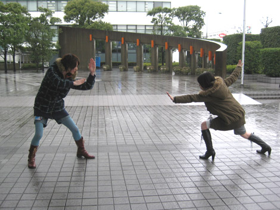

『発売5日前！チップをハミだし(前編)』
2009年02月14日
こんにちは、マツバラです！
いよいよPS3/Xbox360版『SWA』発売まであと5日です！
本日から発売当日まで
毎日何かしらハミだしてカウントダウンしていきます！
さあ、張り切って！
にぎやかに！ 参りましょう！
こんにちは、ヨシノです。
マツバラはデフォルトでうるさいので
これ以上張り切らなくていいと思っています。
ヨシノはもっと張り切ろうよ！
……さて。
カウントダウン・ハミだし更新ということで
『SWA』のあんな秘密やこんな裏情報を
景気よくベロベロとハミだして行きたいわけですが……
うん、何をハミだすの？
えっ。
……いや、マツバラにはアイデアがあるよね？
へっ？
ヨシノが考えてたんじゃないの？
…………
「連続ハミだし」とか大喜びで騒いでおいて
2人とも無計画！？
いや、ありえない。
マツバラ、考えとけよ。
ヨシノこそ、
しっかりしてよ！！
頼りにならないなあ！
……マツバラ。
今、なんて言った。
表に出ろ……
上等よ―――！！

川村：……2人とも、何やってるの？
あっ、『SWA』アートディレクターの川村さん！
それが、2人とも
ブログのネタを考えてなくてですね……
川村：え～？(笑)
お願いします、助けてください！
何か、ハミだせるものください。
川村：仕方ないなあ……。探してみるよ～。
本当ですか！
ありがとうございます！！
救世主です！！
わーわー、女神ー！
川村：いや、そういうのいいから、
会社前で決闘はやめとこうよ(笑)
そして、導かれるままに
川村さんのお席へ……
川村：あ、見て。こんなの出てきたよ。
それは……？
川村：『SWA』の新キャラクター
「チップ」の初期デザイン稿だよ。
おおっ。
これは、お宝！！
よく見せてくださ～い！
川村：実は「チップ」は初め、
「ホイップ」っていう名前だったの。
その名前も可愛いですね！
ふわふわ甘いホイップクリームってイメージで……
川村：そう。
だから、初期デザイン稿では
「ホイップクリーム」がモチーフになってるんだよ。
本当だ。
いろんなところがフワフワしてますな。
妖精っぽいのも、いるね！
なんで「ホイップ」じゃなくて
「チップ」になったんですか？
川村：それがさ。
英語で「Whip(ホイップ)」って言ったら
「鞭打ち」とか「折檻」って意味がある……って
セガ・オブ・アメリカのスタッフに突っ込まれてね～。
……！
元気で愛くるしい新キャラの名前が「鞭打ち」君。
……こわ。
それは、仕方ないですね……
川村：まだ、あるよ～。
見たい？
やったー！
見せてください！
それでは今回はこの辺で！
次回、まだまだチップをハミだします！
日時: 2009年02月14日 16:00 | パーマリンク


 ソニックを愛する、元気な『SWA』2年目プランナー。
ソニックを愛する、元気な『SWA』2年目プランナー。 マイペースな『SWA』2年目プランナー。
マイペースな『SWA』2年目プランナー。
 ご意見・ご要望はこちら
ご意見・ご要望はこちら RSS
RSS